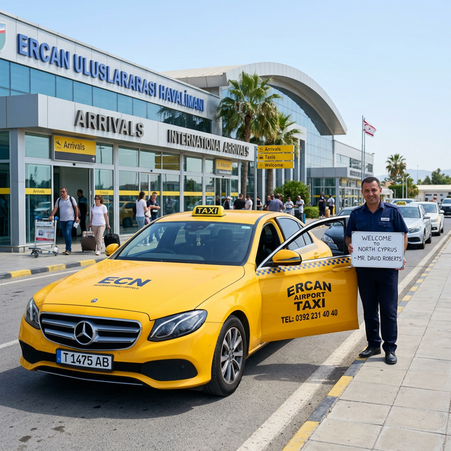
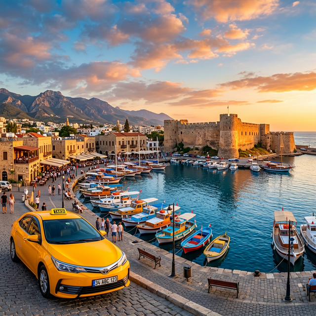
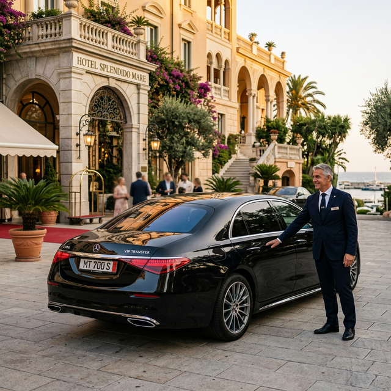
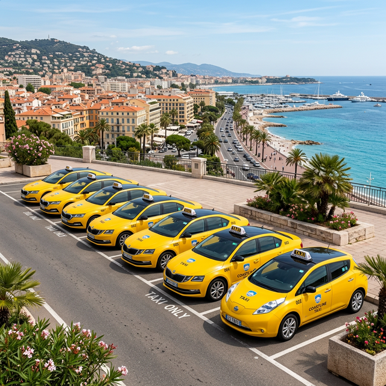

Havalimanı Transfer
Ercan Havalimanı'ndan Girne'ye ve Girne'den havalimanına güvenli ve konforlu transfer hizmeti. Uçuş takibi ile zamanında alım garantisi.
- Uçuş takip sistemi
- Karşılama hizmeti
- Sabit fiyat garantisi
Girne Taksi

Kuzey Kıbrıs Girne'de güvenilir, konforlu ve uygun fiyatlı taksi hizmeti. Havalimanı transferi, şehir içi ulaşım, VIP transfer ve şehir turları için bizi tercih edin.
Girne ve Kuzey Kıbrıs genelinde profesyonel taksi hizmetleri sunuyoruz. Her ihtiyacınıza uygun çözümlerimizle yanınızdayız.

Ercan Havalimanı'ndan Girne'ye ve Girne'den havalimanına güvenli ve konforlu transfer hizmeti. Uçuş takibi ile zamanında alım garantisi.
Girne merkez ve çevresinde hızlı, güvenilir şehir içi taksi hizmeti. Taksimetre ile şeffaf fiyatlandırma.

Özel günler, iş toplantıları ve lüks transferler için VIP araç hizmeti. Profesyonel şoförlerimizle ayrıcalıklı yolculuk.

Girne, Lefkoşa, Gazimağusa ve Kuzey Kıbrıs'ın tarihi güzelliklerini özel turlarımızla keşfedin.
15 yılı aşkın tecrübemiz ile Girne'de en güvenilir taksi hizmeti olarak yolcularımıza en iyi deneyimi sunuyoruz.
Tüm araçlarımız sigortalı ve düzenli bakımlıdır. Deneyimli sürücülerimizle güvenle yolculuk yapın.
Gece gündüz, haftanın her günü Girne taksi hizmeti. Sizi nerede olursanız olun alıyoruz.
Şeffaf ve rekabetçi fiyatlandırma. Gizli ücret yok, taksimetreli veya sabit fiyat seçenekleri.
Klimalı, temiz ve bakımlı araçlarımızla Girne'de konforlu yolculuk deneyimi yaşayın.
Aradığınızda ortalama 5-10 dakika içinde kapınızda. Girne'nin her noktasına hızlı erişim.
Eğitimli ve deneyimli şoförlerimiz, nazik hizmet anlayışıyla sizi her zaman memnun eder.
Girne Taksi olarak, geniş ve modern araç filomuzla her türlü ulaşım ihtiyacınızı karşılıyoruz.
Ekonomik ve konforlu şehir içi ulaşım araçları. Toyota, Hyundai, Renault marka araçlar.
Geniş ve konforlu araçlarla uzun mesafe yolculukları. Mercedes, BMW sınıfı araçlar.
Lüks Mercedes S-Class, BMW 7 Serisi ile VIP transfer hizmeti.
Grup transferleri için 8-16 kişilik minibüsler. Havalimanı ve tur grupları için ideal.
Girne Taksi olarak şeffaf fiyatlandırma ile hizmet veriyoruz. Aşağıdaki fiyatlar yaklaşık değerlerdir.
Fiyatlar yaklaşık olup, araç tipi, saat ve güzergaha göre değişiklik gösterebilir. Kesin fiyat için lütfen bizi arayın.
Girne Taksi olarak, müşteri memnuniyetini en ön planda tutuyoruz. İşte müşterilerimizden gelen yorumlar.
Girne Taksi hizmetleri hakkında en çok sorulan soruları ve cevaplarını burada bulabilirsiniz.
Girne'den Ercan Havalimanı'na taksi ücreti yaklaşık 800-1000 TL arasındadır. Fiyatlar araç tipine ve saate göre değişiklik gösterebilir. Kesin fiyat bilgisi için bizi 0548 870 00 00 numarasından arayabilirsiniz.
Evet, Girne Taksi olarak 7 gün 24 saat kesintisiz taksi hizmeti sunuyoruz. Gece gündüz her an bizi arayabilir veya WhatsApp üzerinden ulaşabilirsiniz.
Evet, lüks Mercedes ve BMW araçlarımızla VIP transfer hizmeti sunuyoruz. Düğün, özel gün, iş toplantısı veya havalimanı transferlerinde VIP hizmetimizi tercih edebilirsiniz.
Nakit (TL, EUR, GBP, USD) ve kredi kartı ile ödeme kabul ediyoruz. Ayrıca banka havalesi ile de ödeme yapabilirsiniz.
Girne Taksi'ye 0548 870 00 00 numarasından veya WhatsApp üzerinden ulaşabilirsiniz. 7/24 hizmetinizdeyiz.
Girne şehir merkezi ve yakın çevresinde ortalama 5-10 dakika içinde taksiniz kapınızda olur. Yoğun saatlerde bu süre biraz uzayabilir.
Evet, Girne Kalesi, Bellapais Manastırı, St. Hilarion Kalesi, Lefkoşa, Gazimağusa ve daha pek çok tarihi bölgeye özel tur hizmetleri düzenliyoruz. Detaylı bilgi için bizi arayın.
Girne Taksi ile iletişime geçmek çok kolay! Telefon, WhatsApp veya aşağıdaki form ile bize ulaşabilirsiniz.
Girne Merkez, Kuzey Kıbrıs
KKTC